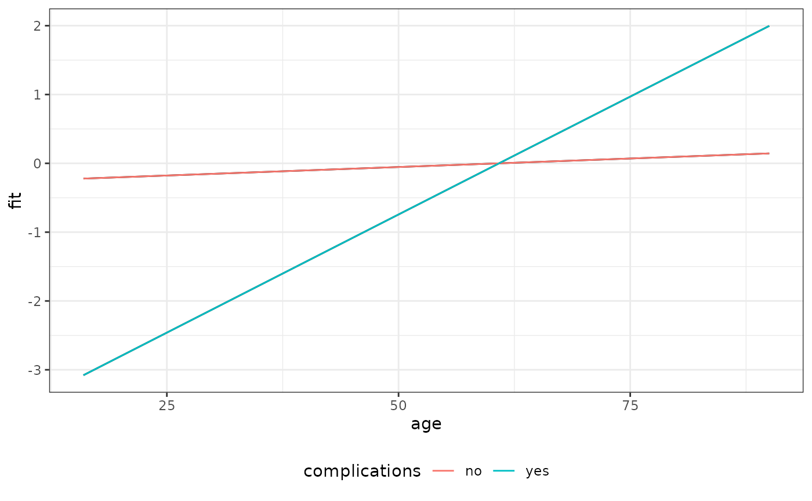
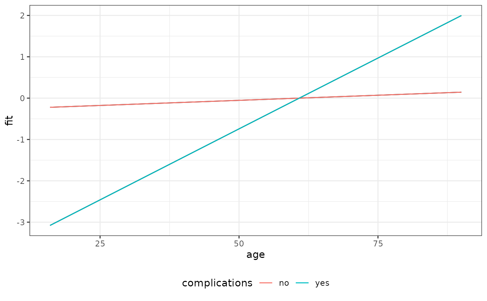

Flexible, high-level plotting function for (non-linear) effects conditional on further covariate specifications and potentially relative to a comparison specification.
gg_slice(data, model, term, ..., reference = NULL, ci = TRUE)Arguments
- data
Data used to fit the
model.- model
A suitable model object which will be used to estimate the partial effect of
term.- term
A character string indicating the model term for which partial effects should be plotted.
- ...
Covariate specifications (expressions) that will be evaluated by looking for variables in
x. Must be of the formz = f(z)wherezis a variable in the data set andfa known function that can be usefully applied toz. Note that this is also necessary for single value specifications (e.g.age = c(50)). For data in PED (piece-wise exponential data) format, one can also specify the time argument, but see "Details" an "Examples" below.- reference
If specified, should be a list with covariate value pairs, e.g.
list(x1 = 1, x2=50). The calculated partial effect will be relative to an observation specified inreference.- ci
Logical. Indicates if confidence intervals for the
termof interest should be calculated/plotted. Defaults toTRUE.
Examples
ped <- tumor[1:200, ] %>% as_ped(Surv(days, status) ~ . )
model <- mgcv::gam(ped_status~s(tend) + s(age, by = complications), data=ped,
family = poisson(), offset=offset)
make_newdata(ped, age = seq_range(age, 20), complications = levels(complications))
#> # A tibble: 40 × 14
#> tstart tend intlen interval id offset ped_status charlson_score age
#> <dbl> <dbl> <dbl> <fct> <dbl> <dbl> <dbl> <dbl> <dbl>
#> 1 0 5 5 (0,5] 101. 1.61 0 2.71 16
#> 2 0 5 5 (0,5] 101. 1.61 0 2.71 19.9
#> 3 0 5 5 (0,5] 101. 1.61 0 2.71 23.8
#> 4 0 5 5 (0,5] 101. 1.61 0 2.71 27.7
#> 5 0 5 5 (0,5] 101. 1.61 0 2.71 31.6
#> 6 0 5 5 (0,5] 101. 1.61 0 2.71 35.5
#> 7 0 5 5 (0,5] 101. 1.61 0 2.71 39.4
#> 8 0 5 5 (0,5] 101. 1.61 0 2.71 43.3
#> 9 0 5 5 (0,5] 101. 1.61 0 2.71 47.2
#> 10 0 5 5 (0,5] 101. 1.61 0 2.71 51.1
#> # ℹ 30 more rows
#> # ℹ 5 more variables: sex <fct>, transfusion <fct>, complications <chr>,
#> # metastases <fct>, resection <fct>
gg_slice(ped, model, "age", age=seq_range(age, 20), complications=levels(complications))
 gg_slice(ped, model, "age", age=seq_range(age, 20), complications=levels(complications),
ci = FALSE)

gg_slice(ped, model, "age", age=seq_range(age, 20), complications=levels(complications),
reference=list(age = 50))
gg_slice(ped, model, "age", age=seq_range(age, 20), complications=levels(complications),
ci = FALSE)

gg_slice(ped, model, "age", age=seq_range(age, 20), complications=levels(complications),
reference=list(age = 50))